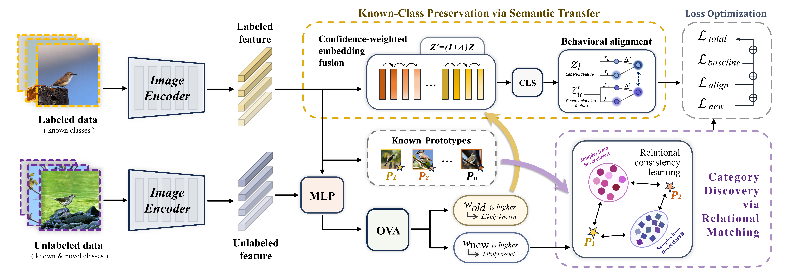
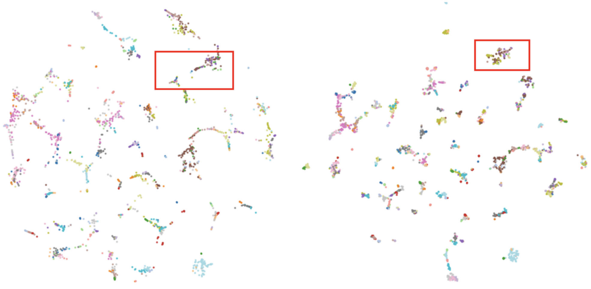
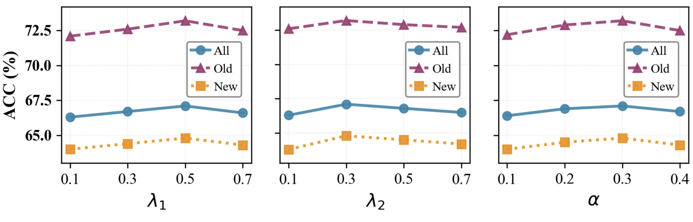

Generalized Category Discovery (GCD) aims to classify unlabeled samples into both known and novel categories, given labeled data of known classes. Existing methods treat labeled and unlabeled data as separate learning streams---supervised for labeled, self-supervised for unlabeled---overlooking the potential for mutual enhancement.
To address this, we tackle GCD from a novel relational retrieval perspective and propose Relational Pattern Consistency (RPC), a framework that explicitly couples labeled and unlabeled data through bidirectional knowledge transfer. RPC employs One-vs-All classifiers for soft ID/OOD decomposition, then introduces two mechanisms: (i) confidence-weighted embedding fusion with behavioral alignment to transfer semantic patterns from labeled to unlabeled known-class samples, and (ii) relational consistency learning that discovers novel categories through their invariant similarity patterns with known-class prototypes, transforming unreliable pseudo-labeling into well-defined relational pattern matching.
Experiments on six benchmarks demonstrate state-of-the-art performance, with RPC improving Old ACC by 1.4% on CUB over the strongest baseline while achieving strong gains on fine-grained tasks.

Overview of RPC. Soft ID/OOD decomposition via OVA classifiers enables bidirectional knowledge transfer: embedding fusion for known-class preservation and relational matching for category discovery.
We compare RPC with previous state-of-the-art GCD methods on the SSB benchmark and generic datasets. All methods are based on the DINO pre-trained backbone.
| Methods | CUB | Stanford Cars | FGVC-Aircraft | CIFAR10 | CIFAR100 | ImageNet-100 | ||||||||||||
|---|---|---|---|---|---|---|---|---|---|---|---|---|---|---|---|---|---|---|
| All | Old | New | All | Old | New | All | Old | New | All | Old | New | All | Old | New | All | Old | New | |
| k-means | 34.3 | 38.9 | 32.1 | 12.8 | 10.6 | 13.8 | 16.0 | 14.4 | 16.8 | 83.6 | 85.7 | 82.5 | 52.0 | 52.2 | 50.8 | 72.7 | 75.5 | 71.3 |
| RS+ | 33.3 | 51.6 | 24.2 | 28.3 | 61.8 | 12.1 | 26.9 | 36.4 | 22.2 | 46.8 | 19.2 | 60.5 | 58.2 | 77.6 | 19.3 | 37.1 | 61.6 | 24.8 |
| UNO+ | 35.1 | 49.0 | 28.1 | 35.5 | 70.5 | 18.6 | 40.3 | 56.4 | 32.2 | 68.6 | 98.3 | 53.8 | 69.5 | 80.6 | 47.2 | 70.3 | 95.0 | 57.9 |
| GCD | 51.3 | 56.6 | 48.7 | 39.0 | 57.6 | 29.9 | 45.0 | 41.1 | 46.9 | 91.5 | 97.9 | 88.2 | 73.0 | 76.2 | 66.5 | 74.1 | 89.8 | 66.3 |
| PromptCAL | 62.9 | 64.4 | 62.1 | 50.2 | 70.1 | 40.6 | 52.2 | 52.2 | 52.3 | 97.9 | 96.6 | 98.5 | 81.2 | 84.2 | 75.3 | 83.1 | 92.7 | 78.3 |
| DCCL | 63.5 | 60.8 | 64.9 | 43.1 | 55.7 | 36.2 | - | - | - | 96.3 | 96.5 | 96.9 | 75.3 | 76.8 | 70.2 | 80.5 | 90.5 | 76.2 |
| SimGCD | 60.3 | 65.6 | 57.7 | 53.8 | 71.9 | 45.0 | 54.2 | 59.1 | 51.8 | 97.1 | 95.1 | 98.1 | 80.1 | 81.2 | 77.8 | 83.0 | 93.1 | 77.9 |
| SPTNet | 65.8 | 68.8 | 65.1 | 59.0 | 79.2 | 49.3 | 59.3 | 61.8 | 58.1 | 97.3 | 95.0 | 98.6 | 81.3 | 84.3 | 75.6 | 85.4 | 93.2 | 81.4 |
| ProtoGCD | 63.2 | 68.5 | 60.5 | 53.8 | 73.7 | 44.2 | 56.8 | 62.5 | 53.9 | 97.3 | 95.3 | 98.2 | 81.9 | 82.9 | 80.0 | 84.0 | 92.2 | 79.9 |
| DebGCD | 66.3 | 71.8 | 63.5 | 65.3 | 81.6 | 57.4 | 61.7 | 63.9 | 60.6 | 97.2 | 94.8 | 98.4 | 83.0 | 84.6 | 79.9 | 85.9 | 94.3 | 81.6 |
| RPC (Ours) | 67.1 | 73.2 | 64.8 | 65.5 | 81.0 | 57.8 | 62.1 | 65.5 | 61.0 | 97.6 | 95.2 | 98.8 | 83.9 | 85.1 | 81.0 | 86.2 | 93.8 | 82.1 |
Table 1: Comparison with state-of-the-art methods on generic and fine-grained benchmarks. All values are percentages.
t-SNE visualization on CUB. (a) DebGCD and (b) RPC. Red boxes show RPC achieves tighter intra-class grouping and clearer inter-class boundaries.

Impact of hyperparameters λ1, λ2, and α on CUB. Optimal values (λ1=0.5, λ2=0.3, α=0.3) balance preservation, discovery, and fusion. Performance degrades gracefully beyond these points, with overall variation within 1%.

@article{xu2026relational,
author = {Xu, Yulin and Guo, Chunqi and Shuai, Yuanzhen and Ni, Jianyuan},
title = {Relational Retrieval: Leveraging Known-Novel Interactions for Generalized Category Discovery},
journal = {ICMR},
year = {2026},
}